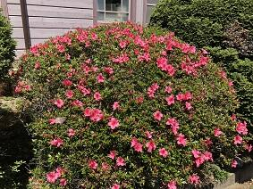

文字
背景
行間


2018年5月の記事一覧
百花繚乱


 本日は、PTAの整備委員会の皆さまが、正門付近の花壇にお花を植える活動をされていました。（写真）皆さんが和気藹藹と活動されているご様子からも、生徒・保護者・職員は言うに及ばす佐倉高校へいらっしゃる皆さまに気持ち良く来校していただけるようにというお気持ちが伝わってまいりました。ご多用ななか、心のこもった校内整備にご尽力いただき本当にありがとうございました。われわれも今後とも温かみと思いやりのあふれた学校となるように、日ごろから注意深く物事を見つめて良い部分を見つけ、多くのことに感謝しながら頑張ってまいります。
本日は、PTAの整備委員会の皆さまが、正門付近の花壇にお花を植える活動をされていました。（写真）皆さんが和気藹藹と活動されているご様子からも、生徒・保護者・職員は言うに及ばす佐倉高校へいらっしゃる皆さまに気持ち良く来校していただけるようにというお気持ちが伝わってまいりました。ご多用ななか、心のこもった校内整備にご尽力いただき本当にありがとうございました。われわれも今後とも温かみと思いやりのあふれた学校となるように、日ごろから注意深く物事を見つめて良い部分を見つけ、多くのことに感謝しながら頑張ってまいります。なお、本校にお越しの際は、これらの「お出迎えの花々」をぜひとも鑑賞していただき、花々から伝わる「おもてなしの心」を感じとっていただければ幸いです。
啐啄同時


 今日は、昨日に引き続き高校総体の千葉県予選会と平成30年度千葉県民体育大会第二部（国体カヌースプリント競技県予選会）が黒部川カヌー場で開催されました。天気も良く風も落ち着いていてとても良い環境で競技を行うことができました。国体の方は高校の選手のほか、中学生や大学生の選手が参加してとても素晴らしい競技が展開されました。本日は、ご多用のところ千葉県教育庁教育振興部体育課から林指導主事がいらして、幅広い選手層の競技を視察され応援してくださいました。
今日は、昨日に引き続き高校総体の千葉県予選会と平成30年度千葉県民体育大会第二部（国体カヌースプリント競技県予選会）が黒部川カヌー場で開催されました。天気も良く風も落ち着いていてとても良い環境で競技を行うことができました。国体の方は高校の選手のほか、中学生や大学生の選手が参加してとても素晴らしい競技が展開されました。本日は、ご多用のところ千葉県教育庁教育振興部体育課から林指導主事がいらして、幅広い選手層の競技を視察され応援してくださいました。今回の競技で思い通り実力が発揮できた人もいればそうでなかった人もいるわけです。力が発揮できなかった原因としては、自分の力が足りていなかった、または、環境がそろっていなかったのかもしれません。そんな時には、機が熟すのを待ちながら、今一度自分の腕を磨くことに専念してみましょう。必ず結果として現れる時がきます。
昨日、今日と香取市水上スポーツ指導員の皆様には大会の安全な運営にご尽力をいただき本当にありがとうございました。今後ともよろしくお願いいたします。
大機大用


 午前中には、ご多用の中、山崎高体連会長が生徒の応援にいらして競技の様子を御覧になりました。
午前中には、ご多用の中、山崎高体連会長が生徒の応援にいらして競技の様子を御覧になりました。生徒にとってこのような大きな大会へのチャレンジの機会を頂けることは大変ありがたいことです。日ごろから、志を高く持ち、大きなチャンスを生かせるように強い意志をもって競技に臨み、そのチャンスを使いこなせるように力をつけておきましょう。そうすれば望む結果が得られます。関東大会予選に引き続き本日も香取市水上スポーツ指導員の皆様には大会の安全な運営にご尽力をいただき本当にありがとうございました。明日もよろしくお願いいたします。
敢為邁往
今日は、今年度最初の定期考査の第一日目です。人生100年時代を主体的に生きる生徒の皆さんには、自己実現のため自ら学ぶ目的を決め生涯学び続けることができるように、佐倉高校在学中に、将来の大きな目標に至るまでのマイルストーンとなる身近な目標を適切に設定し、それを着実に達成していく経験を積み重ねていってください。そして、「やり抜く力」を培ってください。そのためにも「自らの学び」について、これまで学んできた内容や方法を客観的に振り返る契機として定期考査を活用してください。改善すべき点は、改善し、良いところはどんどん伸ばしていきましょう。
看脚下


今日は、本校の平成30年度第1回開かれた学校づくり委員会が開催されました。「開かれた学校づくり委員会」は、各県立学校が創意工夫をしながら、学校と地域がより一層連携を深め、安全・安心で開かれた学校づくりを進めるために、保護者や地域の方々に学校運営や教育活動について検討・評価をしていただき、併せて「県内1,000か所ミニ集会」等の学校が地域における学びの拠点となるような取組の企画・運営を行う組織です。学校としては、学校の取り組みを委員の方々に、いろいろな角度から見ていただき率直なご意見をいただける貴重な機会となっています。学校が進むべき道の中で今どの地点にいるのか、これまで歩いてきた道は正しかったのかどうか。学校として自校を省みるにあたり、いただいたご意見ご提案は、とても重要となります。自分たちの見えている部分と見えなくなっている部分に気づくことで、しっかりと足元を見つめなおしながら一歩一歩進めてまいります。開かれた学校づくり委員の皆さま本日も、ありがとうございました。
晴天雲無
 今日は、地域交流施設を会場に鹿山会の役員、事務局と地域支部、職域支部、クラブOB会、同期会の各支部等の代表者の方々をメンバーとする鹿山会評議会が行われました。6月16日（土）に行われる鹿山会の総会の議案についての議事と各支部等の活動状況報告が行われました。皆さん一様に同窓生として佐倉高校への母校愛に溢れ、後輩の在校生への支援に力を注がれるとともに、同一世代だけでなく世代を超えた繋がりを大切にしていらっしゃる様子がとても頼もしく心強く感じられました。皆さんからいただいたご意見や元気を今後に生かしてまいります。また、来年の120周年記念事業についてもご支援ご協力をお願いいたします。なお、会議の準備から運営に尽力された校内幹事の先生方お疲れさまでした。会議が終わって外に出ると雲一つない青空で、なんとも清々しい気持ちになりました。（写真）
今日は、地域交流施設を会場に鹿山会の役員、事務局と地域支部、職域支部、クラブOB会、同期会の各支部等の代表者の方々をメンバーとする鹿山会評議会が行われました。6月16日（土）に行われる鹿山会の総会の議案についての議事と各支部等の活動状況報告が行われました。皆さん一様に同窓生として佐倉高校への母校愛に溢れ、後輩の在校生への支援に力を注がれるとともに、同一世代だけでなく世代を超えた繋がりを大切にしていらっしゃる様子がとても頼もしく心強く感じられました。皆さんからいただいたご意見や元気を今後に生かしてまいります。また、来年の120周年記念事業についてもご支援ご協力をお願いいたします。なお、会議の準備から運営に尽力された校内幹事の先生方お疲れさまでした。会議が終わって外に出ると雲一つない青空で、なんとも清々しい気持ちになりました。（写真） 墨流し
 このところの暑さや東郷池のエアレーションの不足なのか、原因ははっきりとわかりませんが、池のバクテリアの環境が悪化しているようで、池の水面に油膜の模様ができています（写真）。ここでは、池の水の環境悪化とは別の視点で、この模様自体に視点を当ててみると、この油膜の模様ですが、「墨流し」と呼ばれる水面に落とした墨汁や顔料を吹き散らすとできる模様と原理は同じで、染物では「墨流し染め」の技法が日本では古くから使われています。数学では「アトラクター attractor」と呼ばれている分野で、ある力学系がそこに向かって時間発展をする集合を言います。水質問題とみるか芸術の対象として見るか数学の対象と見るか、同じ物を見ても物の見方は多種多様ですね。
このところの暑さや東郷池のエアレーションの不足なのか、原因ははっきりとわかりませんが、池のバクテリアの環境が悪化しているようで、池の水面に油膜の模様ができています（写真）。ここでは、池の水の環境悪化とは別の視点で、この模様自体に視点を当ててみると、この油膜の模様ですが、「墨流し」と呼ばれる水面に落とした墨汁や顔料を吹き散らすとできる模様と原理は同じで、染物では「墨流し染め」の技法が日本では古くから使われています。数学では「アトラクター attractor」と呼ばれている分野で、ある力学系がそこに向かって時間発展をする集合を言います。水質問題とみるか芸術の対象として見るか数学の対象と見るか、同じ物を見ても物の見方は多種多様ですね。 挨拶
 今朝、鍋山坂を登って校門までの途中で出会ったご近所の方々や小学生と「おはようございます」と挨拶を交わすことができました。特に小学生からは元気よく気持ちの良い挨拶が返ってきて朝からとても清々しい気持ちになりました。私の学校での一日は、古川さんとの朝の挨拶からはじまります。古川さんは朝一番早く学校にいらして生徒の皆さんが気持ちよく学校に来られるように、いつも校内をきれいにしてくださっている方です。同じく河田先生も毎朝、掃除をしてくださっていて本当に頭が下がります。朝、校長室にいても河田先生が生徒と交わす朝の挨拶の声が聞こえて来ます。毎日の挨拶が人と人との間をなめらかにし、そして自分の心にも元気や安らぎを与えてくれます。挨拶をする時の声の調子や表情などで、元気がないとか体調がよさそうだとか、いろいろなことがわかります。「挨拶」の「挨」は積極的に近づくこと、「拶」は切り込んでいくことです。「挨拶」は相手に近づいて相手のことを知り、自分の様子も相手に知ってもらうものです。気持ちの良い挨拶で一日が始まるといいですね。
今朝、鍋山坂を登って校門までの途中で出会ったご近所の方々や小学生と「おはようございます」と挨拶を交わすことができました。特に小学生からは元気よく気持ちの良い挨拶が返ってきて朝からとても清々しい気持ちになりました。私の学校での一日は、古川さんとの朝の挨拶からはじまります。古川さんは朝一番早く学校にいらして生徒の皆さんが気持ちよく学校に来られるように、いつも校内をきれいにしてくださっている方です。同じく河田先生も毎朝、掃除をしてくださっていて本当に頭が下がります。朝、校長室にいても河田先生が生徒と交わす朝の挨拶の声が聞こえて来ます。毎日の挨拶が人と人との間をなめらかにし、そして自分の心にも元気や安らぎを与えてくれます。挨拶をする時の声の調子や表情などで、元気がないとか体調がよさそうだとか、いろいろなことがわかります。「挨拶」の「挨」は積極的に近づくこと、「拶」は切り込んでいくことです。「挨拶」は相手に近づいて相手のことを知り、自分の様子も相手に知ってもらうものです。気持ちの良い挨拶で一日が始まるといいですね。 苺二衣
 「これは、どこの有名菓子店の銘菓でしょうか」とお聞きしたくなるような和菓子ですが、実はこれは2年のEFG組の家庭基礎研究の授業で生徒さんたちが作った苺大福です。とっても！おいしそうでしょう。！！わざわざ、私のところに、生徒さんが昼休みに届けてくれました。あまりの出来栄えにびっくりしてしまい「売り物みたい」というところを、つい「本物みたい」と言ってしまい、生徒に「本物です」と返され大変失礼してしまいました。当初普通の大福だと思っていたので、中から苺が出てきて二度びっくり。口に入れて、そのあまりのおいしさにまたまたびっくり。ちょっぴり甘ずっぱい苺のフレッシュな果汁とそれを受け止めつつ上品な甘さを楽しませてくれる餡。それらをもっちりとした皮がやさしく包み込み食感とあいまって絶妙なハーモニーを醸しだしてくれていました。おいしいものに出会う感動は格別ですね。世間では、「インスタ映え」ということで自分が出会ったおいしいものとかをネットに投稿するのが流行っていますが、ちょっとだけ気持ちがわかってきました。
「これは、どこの有名菓子店の銘菓でしょうか」とお聞きしたくなるような和菓子ですが、実はこれは2年のEFG組の家庭基礎研究の授業で生徒さんたちが作った苺大福です。とっても！おいしそうでしょう。！！わざわざ、私のところに、生徒さんが昼休みに届けてくれました。あまりの出来栄えにびっくりしてしまい「売り物みたい」というところを、つい「本物みたい」と言ってしまい、生徒に「本物です」と返され大変失礼してしまいました。当初普通の大福だと思っていたので、中から苺が出てきて二度びっくり。口に入れて、そのあまりのおいしさにまたまたびっくり。ちょっぴり甘ずっぱい苺のフレッシュな果汁とそれを受け止めつつ上品な甘さを楽しませてくれる餡。それらをもっちりとした皮がやさしく包み込み食感とあいまって絶妙なハーモニーを醸しだしてくれていました。おいしいものに出会う感動は格別ですね。世間では、「インスタ映え」ということで自分が出会ったおいしいものとかをネットに投稿するのが流行っていますが、ちょっとだけ気持ちがわかってきました。 三寒四温
 本日、今年度最後の内科検診の日となりました。多くの学校医の先生方にご協力をいただいて無事内科検診も終了することができました。ありがとうございました。今日の検診を行っていただいた先生には、５月９日にも検診をしていただきました。その日は、最高気温が13.7℃ということで、前日（14.1℃）に引き続きとても寒い１日でした。そういえば、東京都心も同じような状況で、「5月としては、2日連続で15℃未満になったのは25年ぶり」という報道があったのを記憶されている方も多いのではないでしょうか。ですから、その日の内科検診では、少しでも寒さを和らげるため暖房をいれました。それからたった一週間後の今日はといえば、うって変わって夏日となり、最高気温28.1℃ということでした。（もっと暑かったのではないかと個人的には感じました。）さらに今日の最低気温は13.1℃で一日の中での温度変化も15℃と激しいものとなりました。これだけ寒暖の差が激しいと身体は自然に体温調整のためにエネルギーを使います。知らないうちにこれだけでも、疲れがたまる要因になります。生徒の皆さんは、昨日、今年初めての定期考査の日程が示され考査に向かって準備に余念がないと思いますが、本番で力が発揮できるように体調管理にはくれぐれも気をつけましょう。
本日、今年度最後の内科検診の日となりました。多くの学校医の先生方にご協力をいただいて無事内科検診も終了することができました。ありがとうございました。今日の検診を行っていただいた先生には、５月９日にも検診をしていただきました。その日は、最高気温が13.7℃ということで、前日（14.1℃）に引き続きとても寒い１日でした。そういえば、東京都心も同じような状況で、「5月としては、2日連続で15℃未満になったのは25年ぶり」という報道があったのを記憶されている方も多いのではないでしょうか。ですから、その日の内科検診では、少しでも寒さを和らげるため暖房をいれました。それからたった一週間後の今日はといえば、うって変わって夏日となり、最高気温28.1℃ということでした。（もっと暑かったのではないかと個人的には感じました。）さらに今日の最低気温は13.1℃で一日の中での温度変化も15℃と激しいものとなりました。これだけ寒暖の差が激しいと身体は自然に体温調整のためにエネルギーを使います。知らないうちにこれだけでも、疲れがたまる要因になります。生徒の皆さんは、昨日、今年初めての定期考査の日程が示され考査に向かって準備に余念がないと思いますが、本番で力が発揮できるように体調管理にはくれぐれも気をつけましょう。 日々是感謝
 保護者の皆さま、５月１２日の授業参観、PTA総会、進路講演会にご参加いただきありがとうございました。特に、この総会までで、任期を終えられた松田PTA前会長をはじめとする前PTA役員の皆さま、本当に今までありがとうございました。これからも、ご支援ご協力のほど、よろしくお願いいたします。今回もそうですが、この１か月余り、本校が多くの方々に愛され支えられているんだなぁと心から感じられる機会をたくさんいただいています。今日も、早朝から剣道部の生徒さんたちが通路を箒で掃除してくれていました。そのおかげで、きれいになっている通路を多くの生徒が通学できる訳です。もし、普段見慣れている場所が、いつもきれいになっているとしたら、そこには誰かの手が入っているのかもしれません。当たり前にきれいな状態を保つには、普段から汚さないようにすることと、汚れに気がついたらきれいにすることの両方が大切なんでしょう。そのためには、まずはきれいになっていることに気がついて感謝できる心を持てるといいですね。
保護者の皆さま、５月１２日の授業参観、PTA総会、進路講演会にご参加いただきありがとうございました。特に、この総会までで、任期を終えられた松田PTA前会長をはじめとする前PTA役員の皆さま、本当に今までありがとうございました。これからも、ご支援ご協力のほど、よろしくお願いいたします。今回もそうですが、この１か月余り、本校が多くの方々に愛され支えられているんだなぁと心から感じられる機会をたくさんいただいています。今日も、早朝から剣道部の生徒さんたちが通路を箒で掃除してくれていました。そのおかげで、きれいになっている通路を多くの生徒が通学できる訳です。もし、普段見慣れている場所が、いつもきれいになっているとしたら、そこには誰かの手が入っているのかもしれません。当たり前にきれいな状態を保つには、普段から汚さないようにすることと、汚れに気がついたらきれいにすることの両方が大切なんでしょう。そのためには、まずはきれいになっていることに気がついて感謝できる心を持てるといいですね。 柳緑花紅
今日は絵に描いたような五月晴れに恵まれ、公開授業、PTA総会、進路講演会と重要な行事が無事開催できそうです。また、ソフトテニス、囲碁、将棋、柔道、バスケットボール、卓球、剣道、バレーボールのそれぞれの部活動は、関東大会等の県予選で試合に臨んでいます。日ごろから鍛えた力を存分に発揮して目指す目標を達成できることを期待します。話は変わりますが、普段の土曜日の朝は、東郷池の鯉たちは朝御飯は無しですが、今日はしっかりと食べることができて幸せそうでした。（写真左）昨日も学校の敷地内にある草花について話をさせていただきましたが、そこにあるのが当たり前のような感覚になっていると、特に身近にあるものに対して、美しさやありがたみに気付くのが難しいものです。ありふれたものに秘められたかけがえのなさに気付くことができれば毎日の生活は今以上に心豊かに穏やかに過ごせるのではないでしょうか。さて、昨日に引き続きお花が咲いている場所を見つけていただきたく写真を載せました。これは昨日の草花よりは難易度が高くなると思いますが、頑張って見つけてみてください。


百花為誰開

 このところ急に３月の寒さに戻ったり、一日のなかでも気温の変化が激しい日が続いていますが、校内を見て歩くと「躑躅」のような大きな花はありませんが、野の草たちも含め多くの草花が小さな花を咲かせています。校内で、結構目立つのはブタナ（一見とっても成長の良いタンポポに見える）が長い茎の先に黄色の花を咲かせています。花は、誰のためでもなく、ただ無心に咲いています。そこにはいのちの静かな輝きが見てとれます。その様子は、とても尊く清らかで見る人の心を打ちます。
このところ急に３月の寒さに戻ったり、一日のなかでも気温の変化が激しい日が続いていますが、校内を見て歩くと「躑躅」のような大きな花はありませんが、野の草たちも含め多くの草花が小さな花を咲かせています。校内で、結構目立つのはブタナ（一見とっても成長の良いタンポポに見える）が長い茎の先に黄色の花を咲かせています。花は、誰のためでもなく、ただ無心に咲いています。そこにはいのちの静かな輝きが見てとれます。その様子は、とても尊く清らかで見る人の心を打ちます。明日は、公開授業の日ですが、学校にお越しの際は、学校内を散策していただき、花々もぜひご覧ください。なお、今日掲載した花々は、学校で植えたものですが、学校のどこで咲いているか探してみてください。
報恩謝徳
毎日新聞の千葉版に、県内の高等学校の校長が自校をPRするという「校長先生の学校自慢」というシリーズコーナーがあり、本日（５月９日）、本校の記事が掲載されました。記事は、「人が自慢」という出だしで始まります。この４文字には、佐倉高校がすばらしい学校であるのは、今現在、関りをもって頑張っていただいている方々はもちろん、藩校「学問所」からの長い歴史のなかで伝統を培い発展させるとともに、それを支えてくださったすべての方々がいらっしゃることが、本校の財産であり、誇りであり、そのことが、本校が一番に自慢できることであるという感謝の思いを込めた言葉です。言葉足らずで、うまく本校の魅力を伝えられたかわかりませんが、毎日新聞をご購読されている方々は紙面で、そうでない方々は、インターネットで「校長先生の学校自慢」と検索をかけていただけると読むことができますのでご一読いただけると幸いです。
こちらをクリックしてください。→「校長先生の学校自慢」ホームページへ
こちらをクリックしてください。→「校長先生の学校自慢」ホームページへ
冷暖自知
今日、SGHの海外研修のうち、ドイツとイギリスで研修を行ってきた生徒たちによる報告会が、第１体育館で６限にありました。どちらの研修でも、参加した生徒各自の研究テーマについて現地の大学生や中等教育学校の生徒等にプレゼンテーションしてアドバイスをいただいたり、意見交換したりする貴重な体験について報告してくれました。人は、自分の持っている多くの知識を自らの体験や誰かの体験に結びつけながら知識同士を結びつけて汎用的に使える知恵にかえて行く「学び」を行っています。そうした意味からも報告会のような場面では「もし、自分がその場にいたら、どう考え、どう行動し、どう表現し、どう感じただろう」と自分の思いをもって、主体的に参加することがとても重要です。昨日、今日と本校のSGHの取り組みについて視察に来られていた山形県立米沢興譲館高校の先生にも報告会を見学していただきました。人の意見は、その人の体験によるもの。また、同じ体験をしてもそこから得るものは人それぞれ違うものです。自分の感覚や価値観と必ずしも重なるとは限りません。もし、自分が人の意見に振り回されると思ったなら、一度自分で体験してみましょう。報告会でも言われていましたが、文化の違いからくる感じ方や見方の違いに実際に触れて感じてみることはとても大切だと思います。

人間好事節

 本日は、千葉県教育委員会から澤川和宏教育長と大木実教育次長に本校を訪問していただきました。本校の沿革や現状に加えて本校の良さや課題についても説明させていただき、その後、実際に授業や地域交流施設の展示室を含めた校内施設を見ていただきました。授業参観では、先生と生徒たちの息のあった授業展開に時間が経つのも忘れてつい引き込まれてしまいました。
本日は、千葉県教育委員会から澤川和宏教育長と大木実教育次長に本校を訪問していただきました。本校の沿革や現状に加えて本校の良さや課題についても説明させていただき、その後、実際に授業や地域交流施設の展示室を含めた校内施設を見ていただきました。授業参観では、先生と生徒たちの息のあった授業展開に時間が経つのも忘れてつい引き込まれてしまいました。また、本校には、日本の美しい四季の移ろいを感じられる庭園があり、学校の中も生徒たちの様子からその時々に応じた趣が感じられます。自分の心が雑多なことに惑わされていると、１年中すばらしい時期であることをついつい忘れてしまいがちですが、いつだってすばらしい時なのですからそれを楽しめるような気持ちで毎日を過ごしたいものです。
一行三昧
本日5月6日は、5月4日に中止になった第23回関東高等学校カヌー大会千葉県予選会を「佐倉ふるさと広場」近くの鹿島川で開催しました。今日の競技開始時の天候は、前2日間とは違って風が治まっていて、絶好のコンディションのなかで始めることができました。途中から少し風が出てきましたが、本日は、予定したすべての競技を無事に終えることができました。選手は、競技に集中できてとても良い大会であったと思います。そうした選手の姿を見ていると、何を行うにしても、そのことだけに集中して、打ち込んでいれば無駄な動作や雑念が生まれる余地も無くなりとても良い結果がでるものだと思いました。また、今日まで準備と運営をしてくださったカヌー専門部の先生方や関係者の皆様に感謝、感謝です。また、今日お越しいただいた、ご家族の皆様やカヌー部のOB、OGの皆様、応援ありがとうございました。本日、関東大会選考を通過した生徒には、精進湖で行われる関東大会での活躍を期待するとともに、通過できなかった生徒にも5月末のインターハイ予選、国体予選での頑張りを期待したいと思います。


疾風知勁草
 本日は、平成３０年度関東高等学校カヌー大会第２３回関東高等学校カヌー大会千葉県予選が香取市黒部川カヌー場で開催される予定でした。早朝には、昨日（５月３日）の雨と強風は治まり、雲一つない晴天に恵まれていました。ところが、８時３０分頃から風が強くなり、開会式を行っている最中にかなり激しくなってまいりました。すぐに、参加生徒たちには、大会役員の先生から待機がかかり、競技が安全にできるか検討するために、水面の状態や今後の天候について確認がされました。写真にもあるように空は晴天ですが、強風のため水面は大きく波打っている状況でした。予報では、風は、今後も明日にかけて吹き続けるとのことで、生徒の安全を第一に考え、本日の大会は中止となりました。皆さんの話では、これほど大会の時に強風になったのは今まで無かったそうですが、このような状況にあっても、てきぱきとやるべきことを的確にこなしている先生方や関係者の皆さんをあらためて素晴らしく、頼もしく感じました。
本日は、平成３０年度関東高等学校カヌー大会第２３回関東高等学校カヌー大会千葉県予選が香取市黒部川カヌー場で開催される予定でした。早朝には、昨日（５月３日）の雨と強風は治まり、雲一つない晴天に恵まれていました。ところが、８時３０分頃から風が強くなり、開会式を行っている最中にかなり激しくなってまいりました。すぐに、参加生徒たちには、大会役員の先生から待機がかかり、競技が安全にできるか検討するために、水面の状態や今後の天候について確認がされました。写真にもあるように空は晴天ですが、強風のため水面は大きく波打っている状況でした。予報では、風は、今後も明日にかけて吹き続けるとのことで、生徒の安全を第一に考え、本日の大会は中止となりました。皆さんの話では、これほど大会の時に強風になったのは今まで無かったそうですが、このような状況にあっても、てきぱきとやるべきことを的確にこなしている先生方や関係者の皆さんをあらためて素晴らしく、頼もしく感じました。本日の大会自体は、中止となってしまいましたが、本日まで長い時間をかけて準備されてきた先生方や大会運営に関わった多くの関係機関の皆様には本当にありがとうございました。今後ともよろしくお願い申し上げます。
別無工夫
 本日は、ゴールデンウィーク中ということで、朝の通勤列車が、心なしか空いていたように思えました。この期間中も多くの部活動が各種大会や対外活動に参加しています。スポーツや芸術などでは、練習ではできていたのに、本番では、思ったように実力が発揮できなかった。こんな経験は誰しも持っているのではないでしょうか。その原因のひとつとして、本番では「うまくやろう」「失敗してはいけない」と必要以上に力みすぎてしまうことがあげられるます。不必要な力みが加わることで、いつも通りの力が発揮できなくなってしまうのです。これはどんなに素晴らしいトップレベルの選手にもあることです。ですから、プロの選手などは本番前に普段通りの力を発揮できるように平常心を保つための独自の方法を持っています。（例えば、プロ野球選手がバッターボックスで行う決まった所作など）生徒の皆さんも練習で今までできていたなら、うまくやろうと本番で必要以上に工夫することはありません。普段から一所懸命に取り組んできた今の自分を信じていれば、どんな状況でも自然体でうまくいくはずです。皆さんの健闘を祈ります。
本日は、ゴールデンウィーク中ということで、朝の通勤列車が、心なしか空いていたように思えました。この期間中も多くの部活動が各種大会や対外活動に参加しています。スポーツや芸術などでは、練習ではできていたのに、本番では、思ったように実力が発揮できなかった。こんな経験は誰しも持っているのではないでしょうか。その原因のひとつとして、本番では「うまくやろう」「失敗してはいけない」と必要以上に力みすぎてしまうことがあげられるます。不必要な力みが加わることで、いつも通りの力が発揮できなくなってしまうのです。これはどんなに素晴らしいトップレベルの選手にもあることです。ですから、プロの選手などは本番前に普段通りの力を発揮できるように平常心を保つための独自の方法を持っています。（例えば、プロ野球選手がバッターボックスで行う決まった所作など）生徒の皆さんも練習で今までできていたなら、うまくやろうと本番で必要以上に工夫することはありません。普段から一所懸命に取り組んできた今の自分を信じていれば、どんな状況でも自然体でうまくいくはずです。皆さんの健闘を祈ります。 有朋自遠方来 不亦楽乎
光陰如箭


 五月に入り正に皐月晴れの良い天気に恵まれました。学校の「つつじ」は、徐々に少しずつ咲くのではなく、いっきに見事に咲いています。私は、着任して一ケ月がたちました。この一ケ月、ばたばたしていた私とは対照的に、生徒さんたちや先生方、事務職員の皆さんが、目的に向かって着実に進んでいる姿を目の当たりにすることができ、本当に頼もしく誇らしく思っているところです。こうした姿を見ていると本当に、一時一時を大切に精一杯努力することの大切さをあらためて感じる次第です。さて、話はかわりますが、４月３０日（月）は、吹奏楽部の定期演奏会を成田国際文化会館で開催することができました。保護者、ご家族、ご友人をはじめ、地域の方々や小・中学生など多くの皆様に足をお運びいただき、あらためて皆様に感謝申し上げます。本当にありがとうございました。今後とも、ご支援ご協力よろしくお願いいたします。
五月に入り正に皐月晴れの良い天気に恵まれました。学校の「つつじ」は、徐々に少しずつ咲くのではなく、いっきに見事に咲いています。私は、着任して一ケ月がたちました。この一ケ月、ばたばたしていた私とは対照的に、生徒さんたちや先生方、事務職員の皆さんが、目的に向かって着実に進んでいる姿を目の当たりにすることができ、本当に頼もしく誇らしく思っているところです。こうした姿を見ていると本当に、一時一時を大切に精一杯努力することの大切さをあらためて感じる次第です。さて、話はかわりますが、４月３０日（月）は、吹奏楽部の定期演奏会を成田国際文化会館で開催することができました。保護者、ご家族、ご友人をはじめ、地域の方々や小・中学生など多くの皆様に足をお運びいただき、あらためて皆様に感謝申し上げます。本当にありがとうございました。今後とも、ご支援ご協力よろしくお願いいたします。